The Functions of Form
p5.js LESSON 2
In this lesson you will:
- Explore the basic shapes that are built in
- Learn about the coordinate system
- See how the order of statements affects what things look like
Where We Left Off
Last lesson, we learned about the setup() and draw() functions, and how to call the background(), fill(), and stroke() functions to change their color.
Helpful Links
Editor: the online p5.js editor
Reference: documentation for all things in p5.js
Getting Started
Let’s start with a clean slate. When you first navigate to the editor, it should start you with the default code, but if you still have the first lesson up, you can go to File —> New to get it.
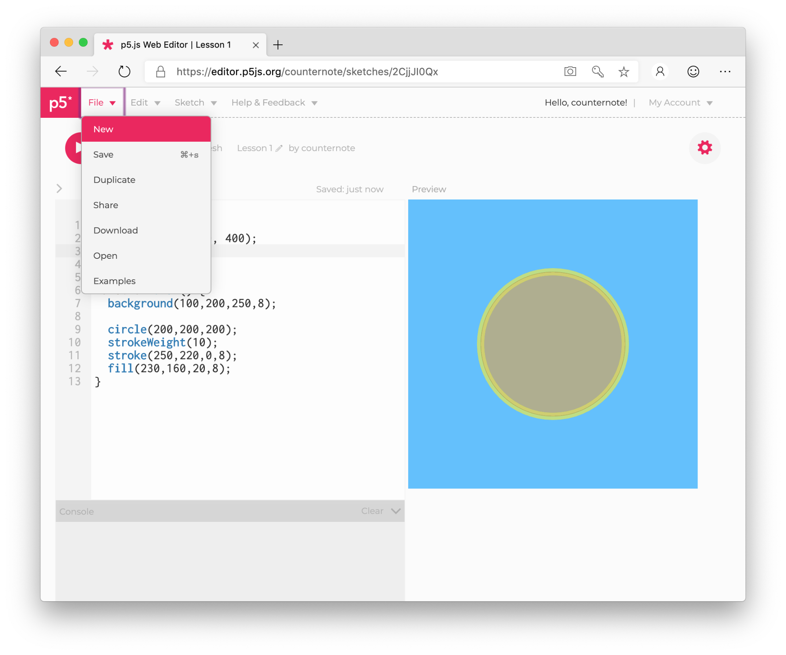
Now we can click on the randomly generated name to give it a more inspiring name, like say Lesson 2. You don’t have to rename it, but this is more informative than the likes of Pickled behavior or High cotton.
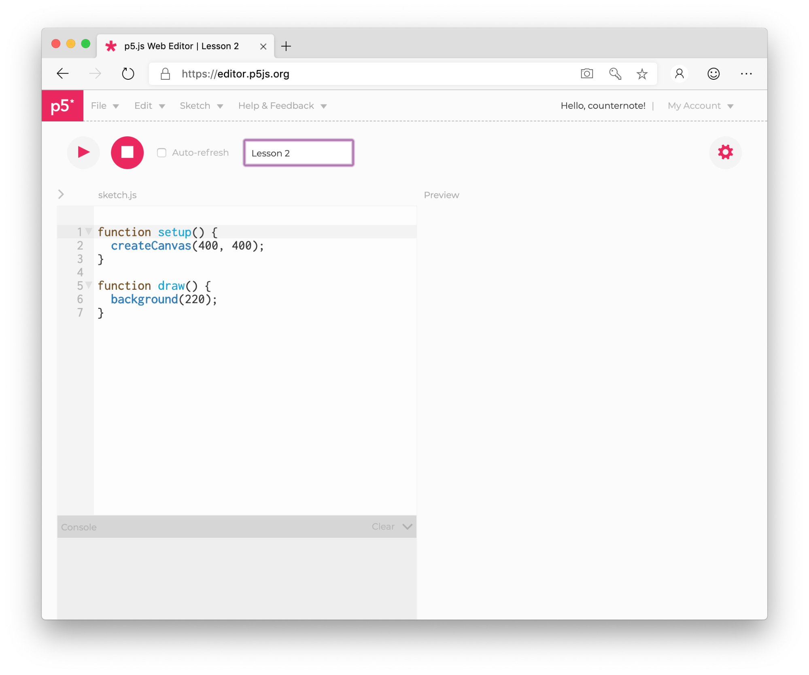
From here on out, we will zoom into the code under sketch.js as below rather than showing the entire window as above.
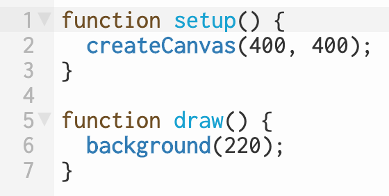
Recall that setup() sets up the display and draw() draws each frame. Use what you learned in Lesson 1 to change the color of the background to something you like.
Shape Up
What would you say are the three most basic shapes? They are circles, triangles, and squares, right? We have already seen circle(), which takes 3 parameters. But we never said what those numbers in the parentheses mean.
The first two tell us the position, one for along the left-right axis, x, the next for along the up-down axis, y. The third number is the diameter here, but we can think of it as the size or width.
Try putting circle(100,100,50); on a new line beneath background() in the body of draw() — that is, in the curly braces. That draws a 50-pixel-wide white circle with a black outline centered at
(100,100).
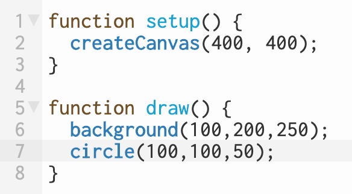
If your formatting goes a bit awry, hold down Shift and press Tab to beautify it.
Go ahead and change the fill and stroke to something that you like. Put those functions after circle().
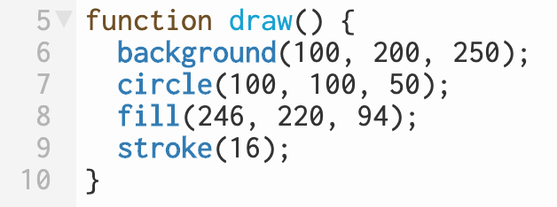
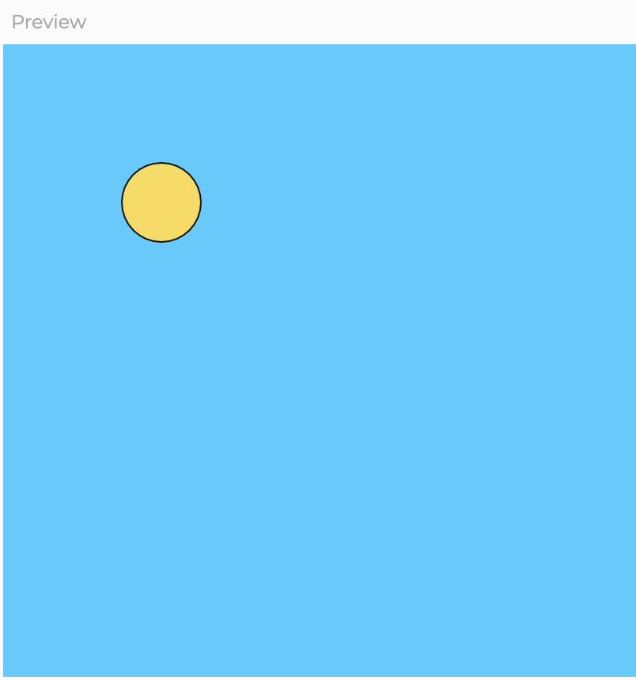
Take a moment to ponder a few questions given the code above: Why is the circle drawn in the upper left instead of the lower left or somewhere to the right of center? Why is the stroke so thin and dark? Why is the fill a yellow color?
Now place noLoop() in setup() like we did in the previous lesson.
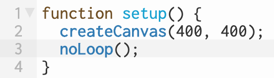
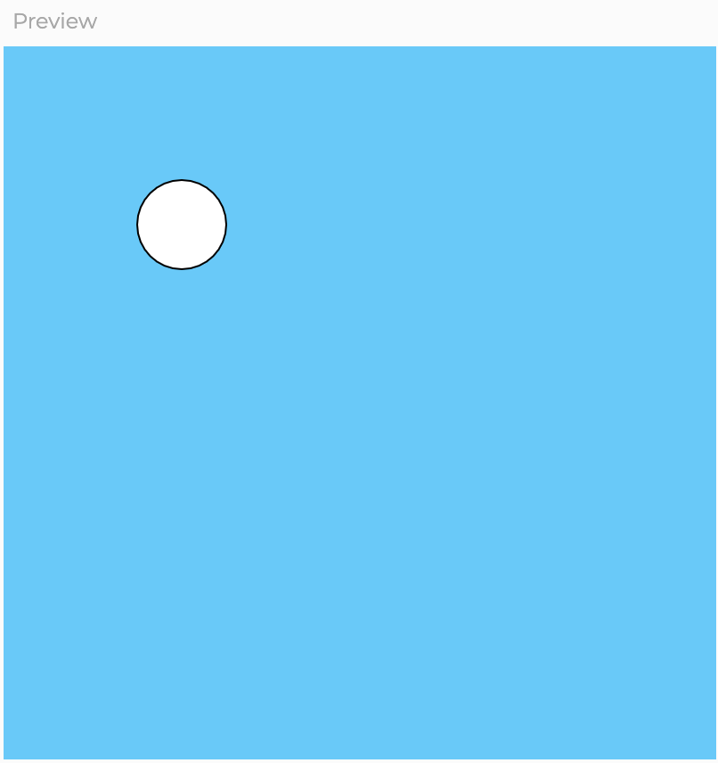
Something changed. What happened to the color? Let’s draw another shape to get a handle on these unanswered questions.
Can you guess what the function is to draw a square?
Hover for a while to reveal a hint
It’s called square()
Try drawing it with the same parameters as circle() below everything else in the body of draw(). It should look like it’s hanging off to the lower right even though its position is exactly the same as the circle, like in the following preview. And notice its color has changed.


Squaring the Circle
Let’s address the color first.
Comment out noLoop() using Ctrl+/ ( Cmd+/ on macOS), both the circle and the square have the same color. But not at first.
The very first two frames have the default fill and stroke values: fill(255); and stroke(0);. But each frame after the first two is drawn with the values we set.
Let’s change the frame rate so that it isn’t drawing so fast we can’t see it change. Comment out noLoop() and place frameRate(1); in the body of setup().
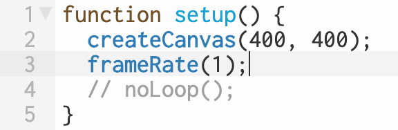
This makes the code update one time per second. Notice how the first frame drew nothing, not even the background, the next drew the noLoop() scenario, and the next drew both shapes with the same color.
Once fill() and stroke() have been set, p5.js remembers those values as the new default. If we wanted two different colors for our different shapes, we have to specify them before we draw our shapes.
Imagine you are coloring with markers. You first have to choose the color you are going to use. If you want to change colors, you have to pick up a different marker.
Add the default fill and stroke values before calling the function circle(). It’s not a bad idea to give yourself an empty line to separate the different shapes in the code window.
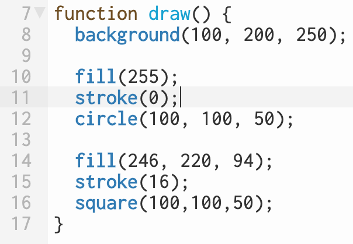
As for the square hanging to the lower right, rectangles are drawn from the corner by default whereas circles are drawn from the center. A square, after all, is just a special kind of rectangle.
Try placing rectMode(CENTER); in setup().
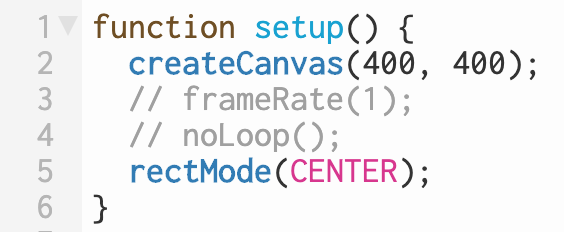
Where did the circle go?
Let’s switch the order in which the circle and square are called.
Select the code for one of the shapes and use the shortcut commands for cut ( Ctrl+X or Cmd+X ) and paste ( Ctrl+V or Cmd+V ). We don’t need to copy ( Ctrl+C or Cmd+C ) here.
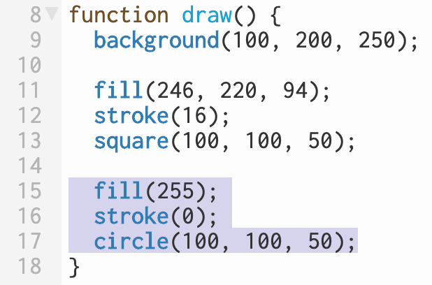
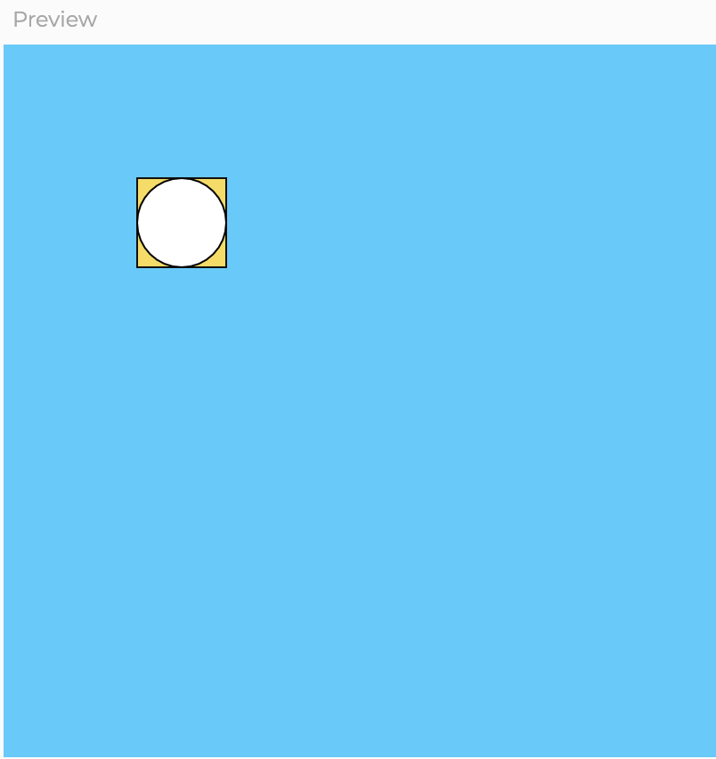
Notice how both shapes have the same width and height and location, but now the circle is placed on top of the square because it’s drawn after the square. Before, the square completely covered the circle so we could not see it. With programming, order matters.
Let’s turn to why (100,100) is in the upper left of a 400 by 400 canvas. Increasing the value of x, the first number in that ordered pair, moves an object to the right. Decreasing it moves it to the left. That’s how
it works in
pretty much every graph you have ever seen.
The y value, however, is different. You would assume that positive y would go up and negative y, down. But it’s reversed.
the why of reverse y
You wouldn’t be out of line to believe the creators of this and just about every computer graphics system are trying to confuse you.
But really, they were just lazy — and smart for it.
Click to read more…

An early computer “display”
wikimedia commons: foto: jonn leffmann
Consider a book written in English. You start at the top of the page on the left. You look at each word to the right until you run out of room, and then move to the next line. It’s natural that we would write in the same direction, and then type in that direction. As you type on an old-timey typewriter, it moves right. When you press return, it moves down a line. The early displays were just glorified typewriters printing out characters. Really. They were known as teleprinters.

At this time, the women in this photograph were also known as computers
wikimedia commons: public domain
There was no screen as we know it. Old-timey televisions similarly scan from left to right at the top, then move down and repeat. Current display technology is built on those conventions.
Now take a look at the line numbers in the code editor.
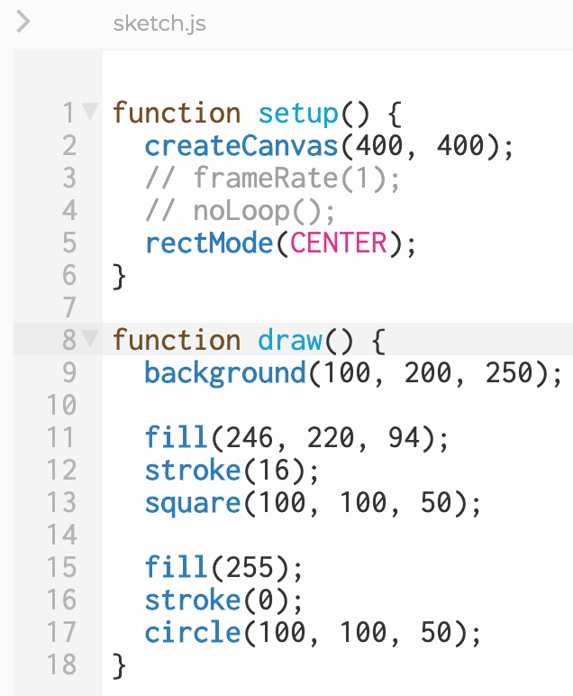
Which direction do they increase in? It’s the same with y.
Beyond Circles and Squares
You now know how to draw circles and squares of different colors. But what other shapes?
We already mentioned the triangle, but we will first tackle the rectangle and ellipse. Just as a rectangle is a special kind of square, a circle is a special kind of ellipse.
Change square(100,100,50 to rect(100,100,50,50) and circle(100,100,50 to ellipse(100,100,50,50).
Notice that rect() and ellipse() each has four parameters. Your code changed. But did your drawing?
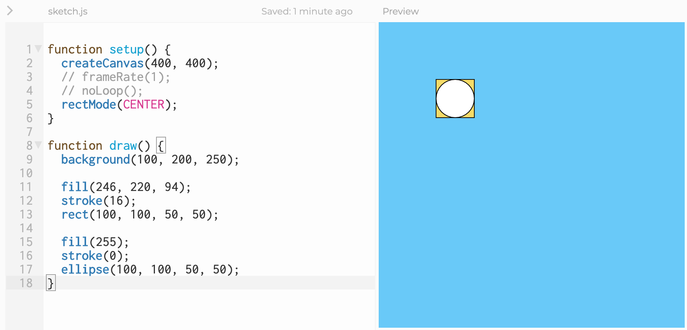
If we change the third parameter to 80, what happens?
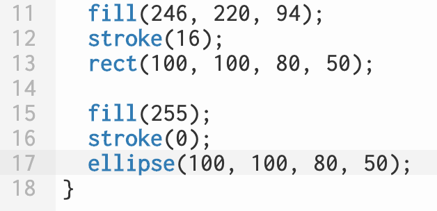
For the circle and the square, the third parameter was its width. Is that still true here? What does the fourth parameter do? Play with those values.
What happens if you call rect() or ellipse() with only 3 parameters?
What happens if you make them negative?
In setup(), change rectMode() to rectMode(CORNER);.
Now what happens when the last two parameters are both positive, both negative, and one of each.
Can you guess why?
Triangles
Unlike the shapes we have seen thus far, which can be drawn using just three or four parameters, triangles are specified differently. To understand them, we first need to understand how to draw a point.
A point probably as a position, which is two parameters, but does it have a size? If it has a size, that would be a circle, right?
Add point(100,100); below the code so far. We want it to draw on top of everything so we put it last. At a default outline thickness of one pixel, it’s hard to see. Add strokeWeight(4) on the line above
point(100,100).
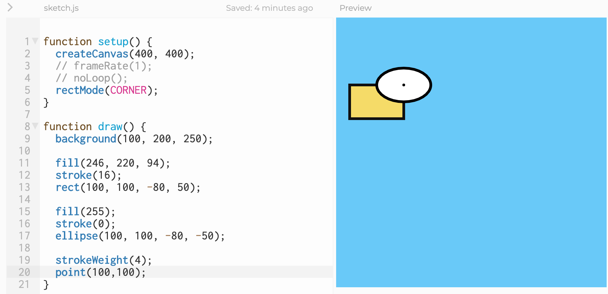
Even though we added the code to change the thickness after the rectangle and the circle, it thickened their outlines too. How would we change that?
A point takes no fill — it’s all outline. Speaking of lines, what do we need to draw one? Two points, right? Try line(100,100,200,200);.
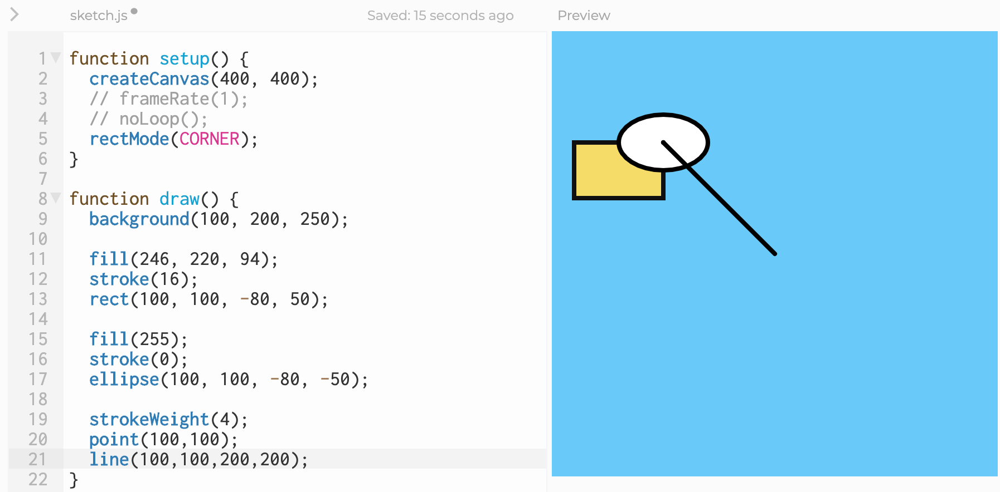
A line is also all outline. This one completely covers up the point. What shape do we get if we add a third point and connect them together?
Finally, our triangle. Put triangle(100,100,200,200,200,100) below line().
Notice that with the point, we only need one pair of coordinates (x,y). With the line, we need two pairs (startX, startY, endX, endY). With the triangle, we need three pairs (x1, y1, x2, y2, x3, y3), one for each corner.
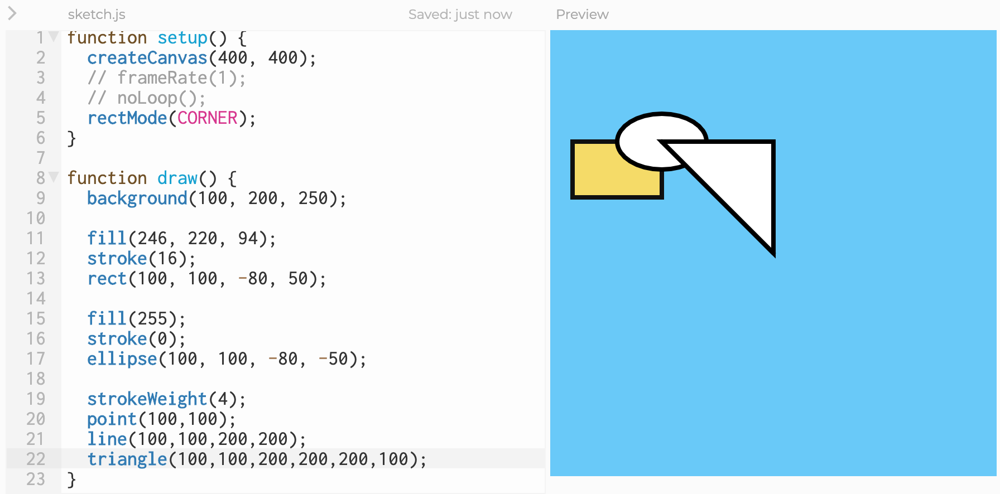
Time to Tinker
challenge
Can you add code and rearrange the order of point(), line(), and triangle() to match the following image. Notice that the outline thickness of the ellipse and rectangle are different as well. The exact colors
are pure red (255,0,0), pure green 0,255,0), and pure blue (0,0,255).
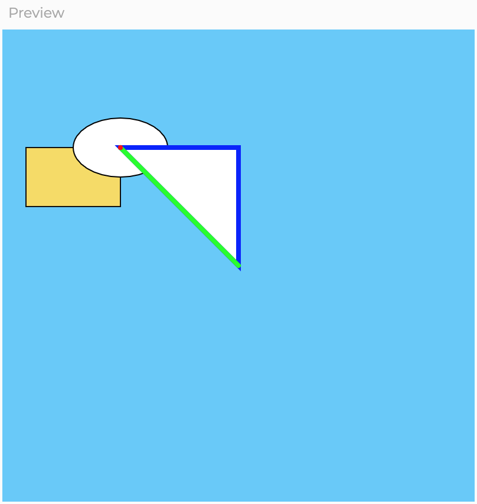